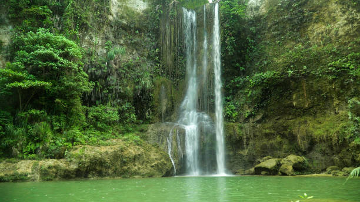
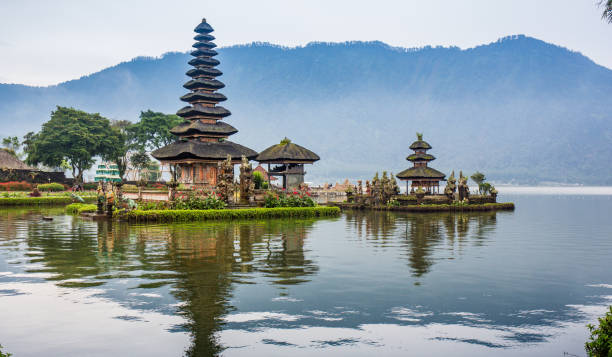
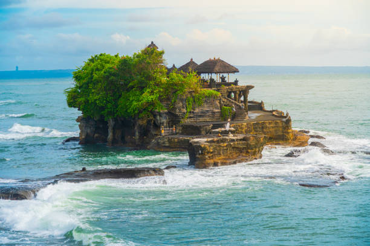

Temple Sunset Tour
Price: Rp 750k




Inclusion : Private Car with Good A/C + Petrol + English Speaking Driver
Price is per 1 car (not per person), maximum 6 person/car
NOTE: Enterance Ticket, meals and drinks are not included
Price is per 1 car (not per person), maximum 6 person/car
NOTE: Enterance Ticket, meals and drinks are not included
Banyumala Waterfall
Beratan Temple
Jatiluwih Riceterrace
Tanah Lot Temple (Sunset)
Beratan Temple
Jatiluwih Riceterrace
Tanah Lot Temple (Sunset)
Banyumala Waterfall
The Banyumala waterfall is one of the beautiful Bali waterfalls, so it can’t be missed on your Bali itinerary! The perfect veil like twin curtains along the rocks and a natural plunge pool to take a dip in are some of the reasons why a visit to this waterfall is recommended.
Beratan Temple
Pura Ulun Danu Beratan, or Pura Bratan, is a major Hindu Shaivite temple in Bali, Indonesia. The temple complex is on the shores of Lake Bratan in the mountains near Bedugul.
Jatiluwih Riceterrace
Jatiluwih Rice Terraces is the bigest rice terraces in Bali, comprises over 600Ha of rice fields that follow the flowing hillside topography of the Batukaru mountain range.
Among the many fields that stretch almost all across the island, the Jatiluwih Rice Terraces in the central coastal regency of Tabanan regency is the best example of Bali's outstanding picturesque rice fields. And represent the Subak system as Bali's Cultural Landscape which has been inscribed a UNESCO's World Heritage Site in June 2012.
Among the many fields that stretch almost all across the island, the Jatiluwih Rice Terraces in the central coastal regency of Tabanan regency is the best example of Bali's outstanding picturesque rice fields. And represent the Subak system as Bali's Cultural Landscape which has been inscribed a UNESCO's World Heritage Site in June 2012.
Tanah Lot Temple (Sunset)
Tanah Lot Temple is one of Bali’s most important landmarks, which is famed for its unique offshore setting and sunset backdrops. An ancient Hindu shrine perched on top of an outcrop amidst constantly crashing waves; Tanah Lot Temple is simply among Bali’s not-to-be-missed icons.
The onshore site of the Tanah Lot temple complex is dotted with smaller shrines together with visitors’ leisure facilities that comprise restaurants, shops and a cultural park where regular dance performances are shown regularly. The temple is located in the Beraban village of the Tabanan regency, an approximate 20km north-west of Kuta. It is often included on sightseeing and cultural tours to Bali’s western and central regions.
The onshore site of the Tanah Lot temple complex is dotted with smaller shrines together with visitors’ leisure facilities that comprise restaurants, shops and a cultural park where regular dance performances are shown regularly. The temple is located in the Beraban village of the Tabanan regency, an approximate 20km north-west of Kuta. It is often included on sightseeing and cultural tours to Bali’s western and central regions.